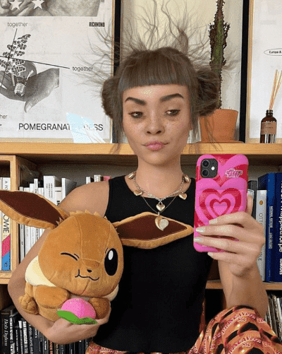

你可能没听过Lil Miquela的名字。即便看到那张长着雀斑的小巧脸庞，也大概率认不出她来。
可是，她却是与特朗普、防弹少年团、蕾哈娜并列的人物。美国《时代》周刊将她与这几个人一起列为"25 位最有影响力的互联网人物"。
她的人设是来自加州的少年模特，在Instagram上，粉丝超过310万，妥妥的顶流。

里尔·米克拉
更特殊的是，她不是人。
虽然在Instagram上，她会和朋友聚会，也会出门旅游，会游泳，会做饭，还有自己少年时甚至婴儿期的照片，但实际上，她是一位由像素而非化学元素构成的虚拟偶像。
就在国内年轻人为洛天依、A-SOUL等虚拟偶像惊叫、付费时，全球也正刮起相似的风潮。无数年轻人为这些完美却又不真实的形象吸引、迷惑，深陷其中。
法新社评价道，这些虚拟偶像及其背后的资本，正在创造"新的世界秩序"。
何为虚拟偶像
“虚拟偶像"概念最早在上世纪80年代的日本就已经出现，但直到2007年"初音未来"的诞生，这一概念才算真正落地。
出道后不久，初音未来就以一首魔性的《甩葱歌》红遍大街小巷，虚拟偶像的时代就此正式拉开帷幕。
初音未来的甩葱歌可谓经典中的经典。
初音未来属于虚拟偶像最早出现的一类形态——虚拟歌姬。虚拟歌姬本质上是一种自带声音库的音频制作软件，只不过每一款声音都拥有专属的画面和人设。
用户把创作好的词曲输入软件并进行调试后，就可以得到用歌姬声线演唱的音乐。在当时，这就是粉丝与虚拟偶像互动的最主要方式了。
之后中国也陆续出现多位中文虚拟歌姬，名气最大的就是洛天依，她经常在各大晚会上露脸，同时也是国内最早实现盈利的虚拟偶像。
.jpg)
洛天依已经与众多大腕有过合作。
经过数年发展，虚拟偶像也衍生出其他更多类型。
比如央视综艺《华彩少年》里颇受争议的AI选手翎，就属于另一个派系，仿真型虚拟偶像，这类爱豆在外形上更接近三次元人类，高科技感拉满。
除此之外，一些手握IP的大公司也致力于将旗下人气角色打造成跨界偶像，比如《全职高手》的男主叶修，还有"王者荣耀"白、亮、信、云、守约五位人气英雄组成的"无限王者团”。他们自带粉丝基础，代言推广接到手软。
女团A-SOUL又是另一个派系，中之人扮演型虚拟偶像。
.jpg)
asoul最近刚刚成团满一周年，并发布了与许嵩和方文山合作的单曲。
简单来说，队内每位成员背后都有一位永不露脸的扮演者，她们也被称为"中之人"。
得益于实时动捕技术，队内五位成员除了外表和人类存在次元壁之外，其他与真人偶像并无二致。她们可以在舞台上即兴唱唱跳跳，能直播聊天打游戏，也能和粉丝插科打诨。如果要概括A-SOUL这类虚拟偶像与其他类的最大不同之处，就是她们虚拟的身体之下，装载着真实的灵魂。
偶像，“人工智障”
“虚拟形象+中之人扮演"这一模式本身并不算新鲜。早在2016年，YouTube上就已经出现了这一类虚拟YouTuber（Virtual YouTuber，简称Vtuber）。
世界上第一个Vtuber是来自日本的绊爱（Kizuna AI），她于2016年12月在YouTube上正式出道。
.png)
绊爱
据绊爱称，她是真正的人工智能，不由中之人控制。不过Vtuber的人设听听就行，不能当真——他们当中不乏有人声称自己几千岁，或者声称自己是真正的鲨鱼或恐龙呢。
圈内普遍认为，声优春日望就是绊爱背后的中之人。因为表情和动作经常透出一股傻气，绊爱也被粉丝戏称为"人工智障”。
作为虚拟主播界的元老级人物，绊爱的YouTube频道“A.I.Channel”现在已经有300万订阅，总观看量超过4亿次。2019年6月30日，绊爱官方进驻B站，目前粉丝数已超过144万。
不过，在今年12月的出道5周年纪念活动中，这位元老也宣布了她即将无限期隐退的消息。
.jpg)
绊爱的走红，使得很多人开始注意到虚拟主播这一领域。一茬接一茬Vtuber涌现，其中虽然也有单打独斗的个人势Vtuber，但处于上位圈的绝大多数都来自Hololive等专门孵化Vtuber的公司。
根据userlocal网站的数据，截至目前，YouTube上，粉丝量超过百万的Vtuber已经有30位，除了绊爱和排在第14名的Nyanners，其余绝大多数主播都来自Hololive。
国内的虚拟主播也叫国V、Vup，他们主要活跃在二次元浓度最高的视频网站B站。据B站官方数据统计，在2020年6月到2021年5月期间，有32412位虚拟主播在B站开播，同比增长40%。除A-SOUL之外，泠鸢、阿梓等也是近期国内热度比较高的Vup。
出道吧！这里不看脸
在当下这个颜值也越来越卷的时代，好看不光是要脸好看，还要符合三庭五眼、高颅顶、圆脑勺、腕线过裆……无论是当偶像还是做网红，如果没有一副优越的皮囊，实难在激烈竞争中出头。
不过在虚拟主播圈，颜值反倒变得没那么重要——只要画师和建模师审美在线，人人都能拥有漂亮的建模，而且还永远不会变老。
.png)
据《日本经济新闻》报道，许多中之人都是怀抱艺人梦，但碍于年龄或长相无法实现的人。于是，他们通过隐于虚拟主播背后，也拥有了追梦的机会。
虽然虚拟主播又是要建模，又是要动作捕捉的，听起来离人们很遥远，但操作起来并不复杂。在自由职业交易平台Fiverr网站上，只需花上一千来块钱，就能得到一个专属定制的Live 2D模型，这类建模能完成的动作和表情都有限，只能捕捉到面部和肩部，但已经足以满足虚拟主播日常直播需求了。
至于面部动作捕捉，现在市面上已经开发出了FaceRig等付费软件，只需要将直播摄像头对准自己，这些软件就能将真人的表情捕捉并同步到虚拟形象上，立绘就能够动起来了。
当然，这只是成本最低的一种方案。成本低也就意味着质量一般，如果要追求更高的视觉效果，烧起钱来，上不封顶。
在Twitch上有着77.3万关注的虚拟主播CodeMiko曾经在直播中分享过自己在设备上花了多少钱：一套动捕服，五折后13500美元;手指追踪，4000美元左右，面部捕捉要用到价值2000多美元的头盔和一台iPhone X，除此之外，她还要为配套软件每年付9000美元的年费。
.png)
虚拟主播CodeMiko在介绍她的设备。
CodeMiko还没有提到建模要花的钱。因为背后的小姐姐本人就是程序员，设计角色和场景、道具自己就能搞定。
和设备比起来，建模这一部分才是真正的开支大头，如果没有雄厚资金支持，主播要想换点新花样，比如说新造型、新场景，实现起来都很困难。
边界正在消失
Bangkok Naughty Boo拥有闪亮的头发和完美无瑕的皮肤，他是亚洲的一位新偶像。他向粉丝们保证，自己永远年轻，永远时尚，永远没有丑闻。
.jpg)
曼谷淘气布，好时髦
这是泰国最新诞生的一位虚拟偶像。据《南华早报》报道，行业分析师认为，“亚洲将成为虚拟偶像市场增长最快的地区之一。Z 世代是亚洲最大的互联网用户群体，他们是数字化的一代，非常熟悉社交媒体和所有虚拟事物。”
为什么他们会放着好好的人不去粉，非要去喜欢一个并不真正存在的"人"？尤其是，与真实鲜活的真人爱豆相比，虚拟主播形象单薄，永远也无法触碰。
曼谷淘气布承诺“永不塌房”是其中一个原因。虚拟偶像和虚拟主播永远年轻、永远好看，他们的人设能满足粉丝的幻想，而且在另一个次元里的他们，绝对不会被爆出恋爱、吸毒等丑闻。
不过，凡事也不能绝对。虚拟偶像圈，也有独特的塌房方式。
中之人如果暴露了个人隐私，或者在直播过程中因为设备故障不小心露出真容，粉丝也会产生很大的落差感。
2018年有一名叫Nora Cat的虚拟主播就出现了这样的塌房事故。在一次直播中，这位戴着猫耳、操着美少女声线的Vtuber突然掉皮，令所有人都没想到的是，Nora Cat的中之人竟然是一位胖大叔，这酸爽感，一如当年的乔碧萝。
.jpg)
掉皮画面太美，我不敢看。
当然，比起那些走红之后态度越来越敷衍的爱豆和主播，虚拟人要敬业多了。因为不需要出差和跑路演，他们往往能保持高强度的直播频率，每天都元气满满地陪伴粉丝，成为粉丝的情感寄托。同时，技术使得想象的边界被打破，使得虚拟主播能够带来现实所不能带来的视觉美感。
在A-SOUL成员的一场生日会直播上，上一分钟她还在大舞台上跳舞，下一分钟就来到了摩天大楼的天台上。成员在屏幕上一键换装，也能手一挥就变出召唤阵，通过召唤阵，还能变出队友。现实世界中无法完成的事情，在虚拟世界里，一切都有了可能。
.jpg)
虚拟偶像的演出服装和场地生动诠释了梦有多大，舞台就有多大。
在泰国一家虚拟偶像运营公司看来，这些虚拟偶像，就像是元宇宙里的第一批原住民。他们正吸引越来越多的虚拟同伴，以及真实世界的粉丝进入。
也因此，各大娱乐公司纷纷暴露出进军虚拟偶像世界的野心。
7月20日，索尼音乐宣布启动"VEE"计划，准备在日本范围内招募50位新人用于培养虚拟主播。
SM在去年10月推出的新女团Aespa同样加入了四名虚拟成员。爱奇艺也打造了虚拟说唱厂牌RiCH BOOM。
无疑，虚拟与现实的界限将变得越来越模糊。未来会有越来越多的虚拟偶像出现，他们也会想方设法吸引现实世界的人们——放在他们身上的时间和精力，多一点，再多一点。
-完-